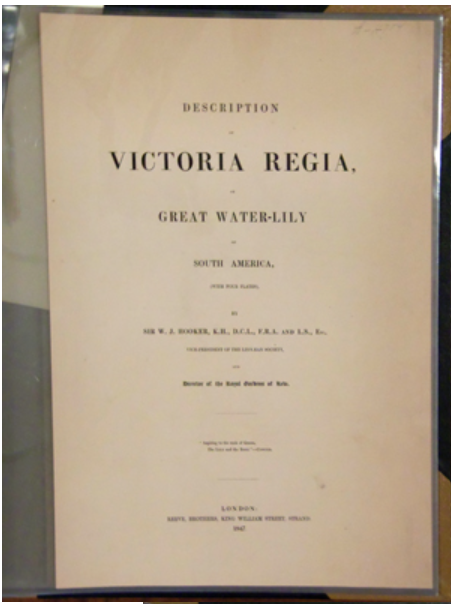

We offer several services for your delicate paper repair and conservation needs.
The volume shown was made from late 19th century pulp-based paper and was very brittle. The pages were separating from the binding and needed to be rebound. However, the paper was heavy and would not hold up well to a simple rebinding. The client preferred a more permanent solution, which involved trimming the ripped edges off of each page, encapsulating the pages, and then binding them in a special, custom-made cover.
While not every project will require this level of work, it is a good example of what can be done in an extreme case.
You can see the trimmed edges on the title page at left and the floral print page below.
This shows the special binding method to hold the mylar encapsulated pages together.